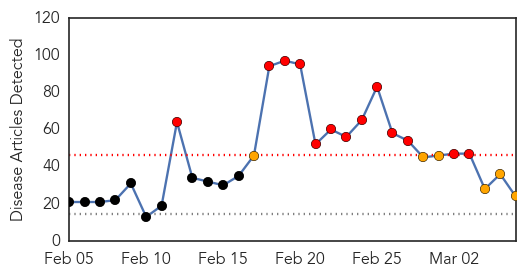
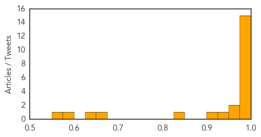
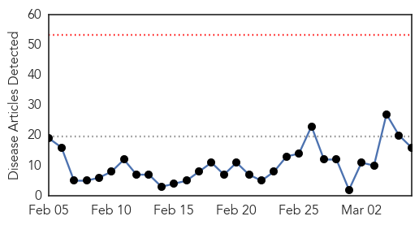
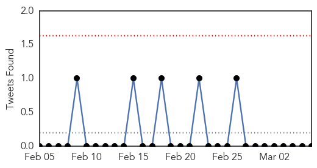
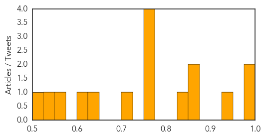

Swine Flu
30-Day Web Trend
13 alerts, 6 warnings

30-Day Twitter Trend
2 alerts, 0 warnings

Article Locations

Article Confidences
Top Articles:
- 1.000
- Swineflu: One more dead in Kashmir, toll reaches 8; 291 affected
- 0.999
- Swine flu: Burney trust warns Pakistanis against travelling to India
- 0.999
- 16 swine flu deaths in two Delhi hospitals; official toll is two
- 0.999
- UAE advises citizens against travelling to India
- 0.999
- Swine flu: UAE advises citizens against travelling to India
- 0.999
- Burney warns Pakistanis against travelling to India
- 0.998
- One more swine flu death takes toll to 9
- 0.997
- 2 more swine flu deaths in J&K
- 0.996
- 16 swine flu deaths in Delhi hospitals; official toll is two
- 0.996
- Swine flu worries
- 0.995
- Swine flu patient's sugar level worrying
- 0.994
- Swine flu claims more lives in India
- 0.990
- Ansar Burney warns Pakistanis traveling to India
- 0.982
- Ansar Burney warned Pakistani citizens against traveling to India
- 0.976
- Sonam Kapoor tests positive for swine flu
- 0.973
- First swine flu case in Manipur
- 0.960
- Daman on alert for tourists from swine flu-hit Surat
- 0.948
- H1N1 cases go up to 11 in district
- 0.923
- Man succumbs to swine flu
- 0.831
- The Assam Tribune Online
- 0.667
- Patient ordeal after cure
- 0.649
- Red tape delays swine flu testing lab
- 0.590
- Tour operators fear cancellations as UAE issues travel advisory
- 0.565
- Holi will be low-key affair this time in city
Top Tweets:
-
No tweets found for Mar 06, 2015
Influenza
30-Day Web Trend
0 alerts, 0 warnings

30-Day Twitter Trend
0 alerts, 0 warnings

Article Locations

Article Confidences
Top Articles:
- 0.984
- Experts predict heavy winter flu toll
- 0.979
- Melinda Moore - Profile
- 0.942
- History of epidemics informs modern science
- 0.871
- Column: Vaccinations should be a lifelong priority
- 0.868
- Unusually virulent flu strain hurts European economy
- 0.825
- Deadly bird flu strain makes first strike at a poultry farm in Mississippi Flyway
- 0.751
- March 6, 2015 Archives
- 0.751
- March 5, 2015 Archives
- 0.751
- March 5, 2015 Archives
- 0.751
- March 5, 2015 Archives
- 0.725
- DA bans poultry imports from California
- 0.638
- In big jump, H5N2 virus hits Minnesota turkey farm
- 0.603
- Avian flu in South Korea, Taiwan prompts massive culling
- 0.559
- 'Highly pathogenic' bird flu killed 15,000 Minnesota turkeys
- 0.546
- Ten Farms in Bauchi State, Nigeria, Hit by Avian Flu
- 0.516
- Bird flu devastates Minnesota turkey flock
Top Tweets:
-
No tweets found for Mar 06, 2015